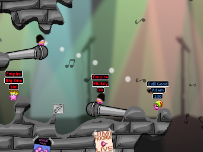
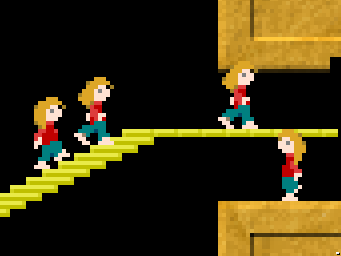
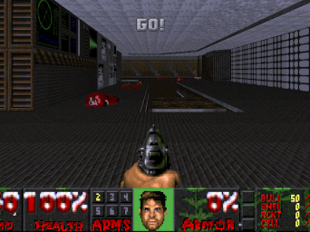
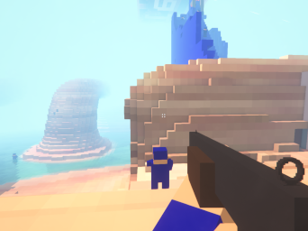
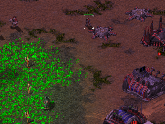
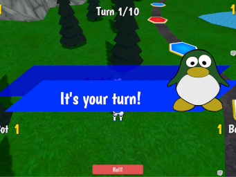
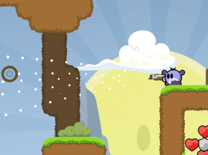
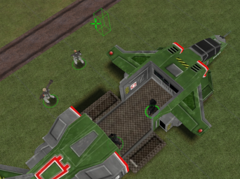
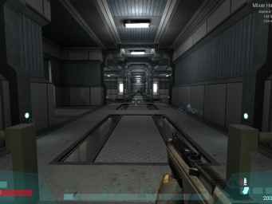

About onFOSS-LAN
onFOSS-LAN is a online, "Free (as Freedom) and Open Source" LAN-Party hosted by DeathByDenim. The goal is to get people together, enjoying the art of computer games and having a great time in these days. The FOSS community is a place of being open minded and acceptance to all different kinds of people with the focus of fully transparent systems and protecting individuals. So it does not matter if you are on Windows, Mac or Linux and it is also NOT necessary to have a PC MASTERRACE setup to run those games.
This concept was originally started at hribhrib.at
Next event
Saturday 17 December 2022, 14:00 UTC
See schedule for more information.
Communication
We use Mumble voice chat on mumble://hribhrib.at. It is the main mode of cummunication during the event.
Matrix chat on #xmpp_onfoss_conference.hribhrib.at:matrix.org
XMPP chat on onfoss@conference.hribhrib.at
See the help page for more information on how to connect to these services.
Games
There are a few game servers running. To connect, simply start the game and connect to this domain. See also the Help section for more information.
 |
Armagetron Advanced | Drive your lightcycle and leave a lightwall behind you. Survive as long as you can and try to make other run into walls. | More info |
 |
Bzflag | Drive around in a tank that can jump, trying to shoot your opponents while dodging their bullets. | More info |
|  | Hedgewars | Worms-like game where your team of hedgehogs needs to destroy the other teams using the ludicrous arsenal at their disposal. | More info |
|  | Lix | Lemmings-like game where you need to guide your little people to safety despite their best efforts of wandering into things that will kill them. | More info |
 |
Mindustry | A building and tower defence game where you build up an industry and defences against ever larger waves of enemies. | More info |
|  | Odamex | Multiplayer-focused DOOM engine that allows deathmatch, coop, and capture the flag mode. Here we are using the Freedom assets so you don't need a copy of the original game to play. | More info |
 |
OpenHV | Real-time strategy game where you mine resources and build units to attack and defend. | More info |
|  | OpenSpades |
Mix between a first person shooter and Minecraft. Build defence structures, dig many tunnels or go on the offensive.
Warning: uses potentially non-open assets. Fix is here. |
More info |
|  | Shattered Paradise | Real-time strategy game where you mine resources and build units to attack and defend. | More info |
 |
OpenSoldat | Fast-paced 2D side-scrolling shooter game where you have a big gun and a jetpack. | More info |
 |
SuperTuxKart | Kart racing game where you can use the various power-ups to give yourself a boost of hinder your opponents. | More info |
|  | Super Tux Party | Turn-based party game where you challenge other player in real-time mini games. | More info |
|  | Teeworlds | Fast-paced 2D side-scrolling shooter game where you have a big gun and a grappling hook. | More info |
|  | UFO: Alien Invasion | Squad-based turn-based tactical strategy game in the tradition of the old X-COM PC games | More info |
|  | Unvanquished | First-person shooter of aliens vs humans. There are several classes and it's possible to build structures. | More info |
 |
Xonotic | First-person shooter where players compete in a 3D world. It features Battle Royale mode. | More info |
Enjoy!
Code
Code for setting up server is on git.libregaming.org and is licensed under the AGPLv3 or later.